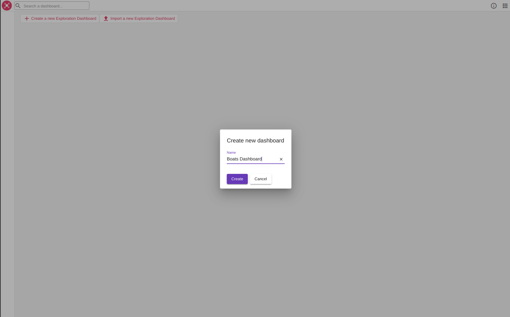
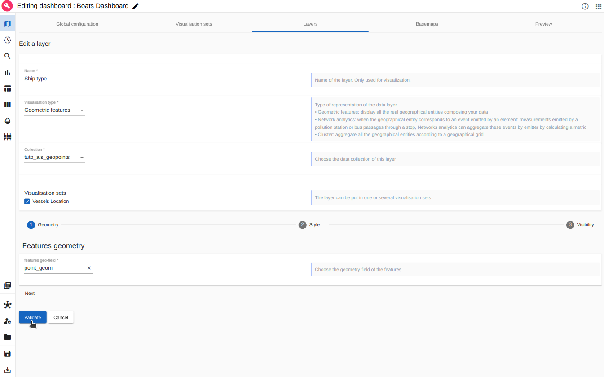
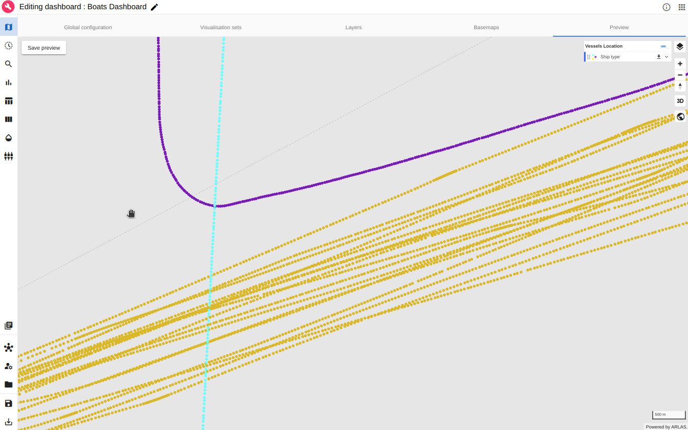
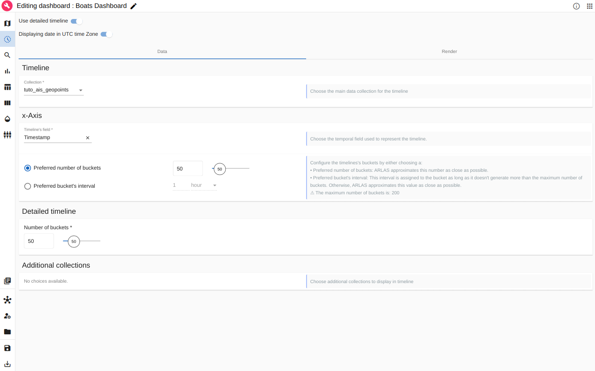
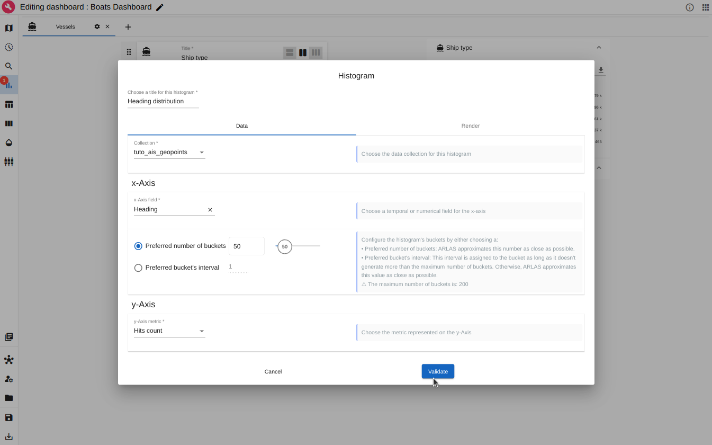

Vessel location (AIS) Tutorial
About this tutorial
What will you learn ?
With this tutorial, you'll be able to:
- Index some AIS data in Elasticsearch
- Reference the indexed AIS data in ARLAS
- Create a view of ARLAS-wui (a dashboard) to explore the AIS data using ARLAS-wui-hub and ARLAS-wui-builder
What will you need ?
Follow the Get Started guide to configure your environment.
What will you get ?
An ARLAS dashboard with map layers and graphs to explore a sample of AIS data.
Exploration app created in this tutorial
The tutorial data
AIS data
Let's explore some boats position data, provided by the Danish Maritime Authority on their website.
This tutorial is based on AIS data emitted from 11/20/2019 to 11/27/2019. We extracted boats positions having the following MMSI :
- 257653000
- 265177000
- 220051000
- 240305000
We built a subset named ais_data_sample.csv. It contains around 162192 boats positions described with 26 columns.
Example of some columns:
- Timestamp: Moment when the position is emitted
- MMSI: Identifier of the boats emitter
- Name: Name of the boat
- Ship type: Type of the boat
A line of the csv file looks like:
| Timestamp | Type of mobile | MMSI | Latitude | Longitude | Navigational status | ROT | SOG | COG | Heading | IMO | Callsign | Name | Ship type | Cargo type | Width | Length | Type of position fixing device | Draught | Destination | ETA | Data source type | A | B | C | D |
|---|---|---|---|---|---|---|---|---|---|---|---|---|---|---|---|---|---|---|---|---|---|---|---|---|---|
| 20/11/2019 06:45:09 | Class A | 240305000 | 55.931783 | 17.345067 | Under way using engine | 0.0 | 10.5 | 257.0 | 259 | 9288710 | SYEF | DELTA CAPTAIN | Tanker | "" | 44 | 249 | GPS | 10.0 | FOR ORDERS | 22/11/2019 06:00:00 | AIS | 216 | 33 | 22 | 22 |
Prepare AIS data
We will explore this data using ARLAS.
- Check that
ais_data_sample.csvfile is downloaded
ls -l ./tutorials/ais/data/ais_data_sample.csv
Apply basic transformations with a python scripts before ingesting the data. Run in a terminal at the project root:
python3.10 ./tutorials/ais/prepare_ais_data.py
Here the script creates a point geometry in WKT format as well as a unique identifier and then write the data in an NDJson file (ais/data/ais_data_sample.json).
Tip
The script can be edited to enrich the data before exploring it.
Ingest AIS data in ARLAS
Index AIS data in Elasticsearch
- Create an empty
ais_geopointsindex in Elasticsearch with the mapping inferred byarlas_cli
arlas_cli indices \
--config local \
mapping tutorials/ais/data/ais_data_sample.json/part-00000-*.json \
--no-fulltext unique_id \
--field-mapping MMSI:keyword \
--field-mapping Timestamp:date-"dd/MM/yyyy HH:mm:ss" \
--push-on ais_geopoints
Check that the index has been created:
| name | status | count | size |
+---------------+--------+-------+------+
| .arlas | open | 0 | 247b |
| ais_geopoints | open | 0 | 225b |
+---------------+--------+-------+------+
Success
The index exists. It does not contain any data yet.
You can check that the data model is correct:
| field name | type |
+--------------------------------+-----------+
| A | long |
| B | long |
...
| point_geom | geo_point |
| unique_id | keyword |
+--------------------------------+-----------+
- Index data that is in
ais_data_sample.jsonin Elasticsearch witharlas_cliarlas_cli indices \ --config local \ data ais_geopoints tutorials/ais/data/ais_data_sample.json/*.json
Check the state of the data index:
| name | status | count | size |
+---------------+--------+--------+--------+
| .arlas | open | 4 | 12.1kb |
| ais_geopoints | open | 162192 | 33.2mb |
+---------------+--------+--------+--------+
Success
The 162192 AIS positions are available in the ais_geopoints
Declare ARLAS collection
ARLAS-server interfaces with the data indexed in Elasticsearch via a collection reference.
The collection references an identifier, a timestamp, and geographical fields which allows ARLAS-server to perform a spatial-temporal data analysis.
See ARLAS Collection for more details.
- Create the
tuto_ais_geopointcollection in ARLAS
arlas_cli collections \
--config local \
create tuto_ais_geopoints \
--index ais_geopoints \
--display-name "AIS Geopoints" \
--id-path unique_id \
--centroid-path point_geom \
--geometry-path point_geom \
--date-path Timestamp
- Check that the collection is created:
| name | index |
+--------------------+---------------+
| tuto_ais_geopoints | ais_geopoints |
+--------------------+---------------+
Success
The tuto_ais_geopoints is created and targets the ais_geopoints index.
Create a dashboard to explore AIS data with ARLAS
The ARLAS stack is up and running, and AIS position data is available for exploration.
We can now create our first dashboard composed of:
- A map to observe the boats positions' geographical distribution
- A timeline presenting the number of boats positions over time
- A search bar to look for boats by their names for instance
- Some widgets to analyse the data from another axis such as the speed distribution.
Create a dashboard
To do so, let's go to ARLAS-wui-hub and create a new dashboard named Boats dashboard

Image: Creation of a dashboard in ARLAS-wui-hub
After clicking on Create, you are automatically redirected to ARLAS-wui-builder to start configuring your dashboard.
The first thing we need to do is to tell ARLAS which collection of data we want to use to create our dashboard.
Image: Choose collection
We choose the tuto_ais_geopoints collection containing the ingested data.
Map configuration
As a first step, let's set the map at zoom level 13 and the map's center coordinates at Latitude=57.451545 and Longitude=10.787131.
This way, when loading the dashboard in ARLAS-wui, the map will be positioned over Denmark.
Image: Map initialisation
Visualisation set
In ARLAS, map layers can be organised in groups called Visualisation Set.
All the layers of a group are shown/hidden together.
We create a first Visualisation Set that we call Vessels Location and we display it by default:

Image: Create a visualisation set called Vessel Location
Location layer colored by ship type
Currently, the map is empty.
Our first goal is to determine where the boats are located and identify their ship types.
Image: Layer view
To do so, let's add a layer named Ship type to visualise the boats location colored by their type.
In the Geometry section, choose the point_geom features geo-field.

Image: Adding a Geometric features layer named 'Ship type'
Note
The layer is included in the visualisation set Vessels Location.
Now, let's define the layer's style.
As a starter, we choose the best representation of our geometries: Boats positions are points, we represent it as Circle.
We choose to color the points according to the Ship type field values contained in the data.
We set the radius to a fixed 4 pixels.

Image: Customising the 'Ship type' layer style
Let's switch to the visibility tab.
We notice that by default, the layer is displayed for all zoom levels (range [0-23]) and for a maximum number of elements of 5000.
If more geopoints are located in your map extend, the layer will no longer be displayed. This limit is often used to switch between direct geometric features layers and aggregated layers (see Aggregated layer below).
Let's increase the limit number of elements to 10000.

Image: Customising the 'Ship type' layer visibility
Success
After clicking on Validate, our first layer is created
Image: New layer 'Ship type' is created
Note
We can edit each layer with the Actions button.
We can now preview the layer in Preview tab

Image: Preview of the 'Ship type' layer
We see now where the boats are passing by thanks to this layer.
Geo Big Data: Aggregated Layer
For this tutorial, we have ~160 000 boats positions to explore, but ARLAS can handle millions of positions.
It would be very difficult to display them all as it would be very heavy to request all that data at once and the browser will not be able to render as many features. We will end up loosing the user experience fluidity.
Most importantly, loading millions of boats positions on the map will not be necessarily understandable: we cannot derive clear and synthesized information from it.
That's why ARLAS proposes a geo-analytic view: we can aggregate the boats positions to a geographical grid and obtain a geographical distribution!
Let's create a dedicated Cluster layer for boats positions geographical distribution. We call this layer Distribution.

Image: Creating a geographical distribution layer called 'Distribution'
We choose the Cluster type, we aggregate the point_geom geo-field to a geographical Tile Grid and we choose a fine granularity for this grid.
We will display on the map the grid's cells.
Let's define the style of these cells in Style section:

Image: Creating a geographical distribution layer
We interpolate the cells colors to the number of boats positions in each cell. That's why we choose Hits count that we normalise and choose a color palette.
In the visibility tab, we can also set the Minimum Features number to 10000 to switch correctly with the created location layer.
After saving this layer, we can again visualise it and explore where the positions are geographically in the Preview tab.

Image: Boats positions geographical distribution
In the preview tab, you can save your current visualisation as Preview that will be displayed to represent the dashboard in the hub.
Save your modifications and switch to ARLAS Hub:

Image: Dashboard preview in ARLAS Hub
Timeline configuration
Let's find out the time period when these positions were emitted.
For that, let's define a timeline: a histogram that will represent the number of boats positions over time.
For the x-Axis we choose the timestamp field and for the y-Axis we choose Hits count: the number of positions in each bucket. We set 50 buckets in this example

Image: Define timeline
In the Render tab we can set a title for the timeline, date format and the histogram type.

Image: Rendering of timeline
Search Bar configuration
To define the search bar we can set :
- the placeholder string
- the field used to search keywords
- the field used to autocomplete the searched words
Image: Define search bar
Analytics board
We focused on the geographical and temporal analysis. We can also explore other dimensions of the data.
Create a tab
ARLAS proposes to organise all the analytic graphs (widgets) in tabs. A tab can correspond to a thematic analysis.
Let's create a tab called 'Vessels' where we will add our widgets.

Image: Creating tab in Analytics board
Note
We can configure the tab "icon" that will represent the tab in the dashboard.
Once the tab is created, we can add groups and widgets.
Distribution of Vessel type (term)
We want to observe the distribution of the geopoints per ship type.
The first step is to create a group that we call 'Ship type' (we can configure its icon) and create a widget.

Image: Creating a 'Ship Type' group and add a widget
The Donut widget and the Powerbars are well adapted to explore a term field distribution.
Create a Donut
Let's create a Donut widget

Image: Creating a Donut widget to explore 'Ship Type' distribution
The donut is base on the Ship type data field.
Create a Powerbars
Let's create a Powerbars widget to complement the Ship type exploration:
Image: Add a Powerbar widget to explore 'Ship Type' distribution
We create a Powerbars where each value of the aggregation field (Ship type) is represented by a bar corresponding to its number of datapoints.

Image: Configure the Powerbar widget to explore 'Ship Type' distribution
Tip
In the Render tab, you can color the powerbars
The two widgets to explore the Ship type information are now available:
Image: Configure the Powerbar widget to explore 'Ship Type' distribution
We can add as many tabs, groups and widgets as we want to explore our data.
Distribution of Heading (number)
Let's see what does the heading distribution of these vessels looks like.
We add a new group we call 'Heading' and create a histogram.

Image: Creating a group in Analytics board tab
Let's configure our histogram. We can give a title to the Heading distribution histogram.
For the x-Axis we choose Heading field and for the y-Axis we choose Hits count: the number of positions in each bucket.

Image: Defining heading distribution histogram
When we save the histogram we automatically get a preview of it in the analytics board.

Image: Preview heading distribution histogram
Tip
Feel free to add all the widgets you want to explore the data !
Explore the dashboard in ARLAS-Wui
Now we defined :
- The map layers
- The timeline
- The search bar
- The widgets
Let's save this dashboard by clicking on the 'Disk' icon at the bottom-left of the page.
If we go back to ARLAS Hub, we'll find the Boats dashboard created.
Image: List of created dashboards
We can now open it in ARLAS-Wui to explore AIS locations:
Image: Exploring Boats dashboard in ARLAS-wui
As you can see we created a simple dashboard to start exploring raw AIS data!
Check out a more sophisticated dashboards about the AIS data in our demo space!
You can get inspired from our different demos to build other map layers and other widgets.